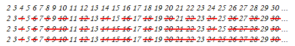

Prime
使用加法，徹底分解數字
例如5 = 1 + 1 + 1 + 1 + 1。
不可分解的單元是1。不稀奇。
使用乘法，徹底分解數字
加法換成乘法之後，事情變化多端，例如5 = 5，例如6 = 2 × 3。可以發現，2、3、5、7、11等，是不可分解的單元。至於4、6、8、9、10等，可以再分解。
不可分解的單元叫做「質數」！非常稀奇！
接下來要介紹的演算法有：從小到大列出質數（建立質數表）、判斷一個數是不是質數（質數測試）、使用乘法湊得給定的數（質因數分解）。
Prime Generation: Sieve of Eratosthenes
Sieve of Eratosthenes
這是一個製作質數表的演算法。簡稱「篩法」。
列出所有正整數。從2開始，刪掉2的倍數。找下一個未被刪掉的數字，找到3，刪掉3的倍數。找下一個未被刪掉的數字，找到5，刪掉5的倍數。如此不斷下去，就能刪掉所有合數，找到所有質數。
質數有無限多個，證明省略。我們無法找到所有質數，通常是預先訂立一個範圍，只找到範圍內的所有質數。
欲刪掉質數i的倍數之時，早已刪掉1倍到i-1倍了，直接從i倍開始。
欲刪掉質數i的倍數之時，早已刪掉「小於i的質數、其倍數」倍了，直接刪掉「大於等於i的質數、其倍數」倍。
乍看下程式碼增多而變慢，實際上cache miss減少而變快。
一個合數x，必定有一個小於等於sqrt(x)的質因數。所有小於等於sqrt(x)的質數，刪掉這些質數的倍數，就能刪掉所有合數了。
顛倒true和false，節省初始化時間。
製作質數表。篩法結束之後，掃描一次陣列即可。
UVa 406 516 524 543 10140 10311 11408
使用bitset來取代bool陣列
一個int有32個位元，可以當作32個欄位來使用，節省記憶體空間，減少cache miss。
不處理2的倍數
不處理2的倍數，節省一半記憶體，增進一點速度。
令陣列第0格代表數字1、陣列第1格代表數字3、陣列第2格代表數字5、……，以此類推。
時間複雜度
考慮內層迴圈索引值j一共有多少種：(N/2 - 2) + (N/3 - 3) + (N/5 - 5) + ... + (N/sqrtN - sqrtN) = O(NloglogN)。
1/1 + 1/2 + 1/3 + ... + 1/N = O(logN) 1/2 + 1/3 + 1/5 + ... + 1/N = O(loglogN) 1/2 + 1/3 + 1/5 + ... + 1/sqrtN = O(loglogsqrtN) = O(loglogN)
http://en.wikipedia.org/wiki/Divergence_of_the_sum_of_the_reciprocals_of_the_primes 1/1 + 1/2 + 1/3 + ... + 1/n - ln(n) 趨近於Euler-Mascheroni constant 1/2 + 1/3 + 1/5 + ... + 1/n - ln(ln(n)) 趨近於Meissel–Mertens constant
Prime Generation: Segmented Sieve of Eratosthenes
Segmented Sieve of Eratosthenes
篩法當中，以不大於sqrt(N)的質數，篩選大於sqrt(N)的數。有種洞燭機先、以小搏大的味道。
篩法需要大量記憶體空間。為了節省記憶體空間，於是有了分段處理的手法：一、首先求得不大於sqrt(N)的質數。二、將記憶體切成小段，每段長度sqrt(N)。分別篩選每一段。
空間複雜度從O(N)變成O(sqrt(N))，大幅減少cache miss。
也許可以做為平行演算法的經典範例。
Prime Generation: Linear Sieve Algorithm
線性時間篩法
一邊製作質數表，一邊刪掉每個數的質數倍，如此每個合數就只讀取一次，時間複雜度達到O(N)。
Prime Generation: Wheel Factorization
6n±1 Method
這是一個精簡版的篩法，原理是：只拿2和3這兩個質數先篩過一遍，剩下的數字則用試除法驗證是不是質數。
2和3的最小公倍數是6，我們就把所有數字分為6n、6n+1、6n+2、6n+2、6n+3、6n+4、6n+5六種（n是倍率）。除以六會餘零的數字為6n，除以六會餘一的數字為6n+1，以此類推。
可以看出6n、6n+2、6n+3、6n+4會是2或3的倍數，不屬於質數。因此，只要驗證6n+1和6n+5是不是質數就可以了。（6n+5也可以寫成6n-1，意義不變。）
6n-1到6n+1，再到下一個6n-1，再到6n+1，把這些要驗證的數字由小排到大，可以發現之間的差值會是2 4 2 4 2 4 ...不斷跳二跳四。實作程式碼時，就可以直接用加法加二加四，而不必用乘法及加減法計算6n-1、6n+1，如此一來程式的執行效率會好一點。
驗證的順序是：數字2和3明顯的是質數，不必驗證；若是從數字5開始驗證，那麼下一個要驗證的數字就是5+2，再下一個就是5+2+4，再下一個就是5+2+4+2，如此不斷下去。
這個方法的時間複雜度是O(NsqrtN)，空間複雜度是O(1)。事實上6n±1法比篩法慢上許多。不過6n±1法不需要開一條超大陣列來做計算，節省了很多空間。
Wheel Factorization
6n±1法進行推廣，使用頭幾個質數。
例如取2 3 5的最小公倍數30，建立30n+k系列。又例如取2 3 5 7的最小公倍數210，建立210n+k系列。
取越多質數，即可剔除越多合數，事前節省時間。
然而，取越多質數，也會建立越多規則，事中浪費時間。
這是取捨兩難的情況，兩者之間必須取得平衡。一般來說，大家只取2 3或者2 3 5。
更有甚著，當你還在煩惱要取多少時，普通的篩法早就已經執行完畢了。更有甚者，當你還在煩惱要如何實作篩法時，網路上已經有現成的質數表了。所謂的取得平衡，端看你的視野高度。
Primality Test
Primality Test
質數測試，測試一個數字是否為質數。
質數測試屬於P問題，不過以下介紹的皆非多項式時間的演算法，甚至是不保證結果正確的演算法。若對多項式時間、保證結果正確的演算法有興趣，可上網搜尋AKS Algorithm。
要進行質數測試，可以直接運用篩法建立質數表，再來判斷質數。然而建立質數表需要大量記憶體，因此又發明了其他方法。
Divisibility Primality Test
整除性測試法。依照質數定義，一個質數p不會被大於1且小於p的數字整除，只要把這些數字都拿來試除，就可以判定一個數字是不是質數。
此演算法其實就是窮舉所有可能的因數一一試除。
這個演算法會進行sqrt(n)-1次除法，可推得時間複雜度為O(sqrtN)，然而前提是：不管n多大，每次除法都是O(1)。
當要測試的數字很多時，可以先建立質數表，進行質數測試時僅檢查質因數。
Square Root Primality Test
餘數系統的平方根有個特性：
以質數n為模數，1的平方根一定等於±1（即是1與n-1）。 以合數n為模數，1的平方根除了等於±1（即是1與n-1），也可能等於其他數字。
平方根測試法是運用此特性而想出的方法：
以質數n為模數，0到n-1之間，只有1與n-1，平方之後等於1。 以合數n為模數，0到n-1之間，還可能有其它數字，平方之後等於1。 以n為模數，當2到n-2的每一個數字，平方之後皆不等於1，就推定n是質數。
此演算法的結果不一定正確。通過測試的數字，可能是合數或質數；無法通過測試的數字，一定是合數。
有些合數會被誤判成質數，例如22就會被判定成質數，1²、2²、…、21²模22之後剛好都餘1。
Fermat's Primality Test
費瑪小定理：
若n是質數，a小於n，則a^n ≡ a (mod n)。 若n是質數，a小於n，a不是零，則a^(n-1) ≡ 1 (mod n)。
費瑪質數測試法是運用費瑪小定理而想出的方法：
n是質數，費瑪小定理一定成立：a^(n-1) % n = 1一定成立。 n是合數，費瑪小定理可能成立：a^(n-1) % n = 1可能成立。 當a^(n-1) % n = 1成立，就推定n是質數。
此演算法的結果不一定正確。通過測試的數字，可能是合數或質數；無法通過測試的數字，一定是合數。
使用各式各樣的a來實施測試，那麼判定結果就更準確。
Primality Test: Miller-Rabin Algorithm
演算法
結合Square Root Primality Test與Fermat's Primality Test。
此演算法的結果不一定正確。通過測試的數字，可能是合數或質數；無法通過測試的數字，一定是合數。
一、選定一個底數a，大於1、小於n，用來進行費瑪測試。 待測數字n，會是費瑪測試的模數。 二、令 n-1 = u * 2^t，其中t盡量大（u為奇數）。 三、觀察a^u這個數字： 若等於±1， 則表示步驟四，所有數字都是1，永不出現平方根測試的反例。 也表示步驟五，最終將通過費瑪測試。 推定n是質數。 四、依序觀察a^(u * 2^1)、a^(u * 2²)、…、a^(u * 2^(t-1))這些數字， 每個數字正好是前一個數字的平方： 甲、一旦發現有個數字的平方等於+1， 則表示無法通過平方根測試。 （但是步驟五，最終將通過費瑪測試。） 確定n是合數。 乙、一旦發現有個數字的平方等於-1， 則表示接下來的數字都是1，永不出現平方根測試的反例。 也表示步驟五，最終將通過費瑪測試。 推定n是質數。 五、觀察a^(u * 2^t)這個數字： 甲、若等於+1，表示通過費瑪測試，推定n是質數。 乙、若不等於+1，表示無法通過費瑪測試，確定n是合數。 回、也就是說，a^(u * 2^(t-1))必須等於±1，平方之後才會等於+1。 步驟五才能通過費瑪測試。 回、由於步驟四已經檢查過a^(u * 2^(t-1))是否為±1， 所以步驟五可以省略，直接確定n是合數。
時間複雜度
步驟二：不斷分解因數2，最多log(n)步，需時O(logN)。
步驟三：餘數次方，Divide and Conquer，需時O(logN)。
步驟四：根據步驟二，最多log(n)-1個數字，需時O(logN)。
總時間複雜度為O(logN)，然而前提是：不管N多大，每次餘數乘法都是O(1)。
Strong Probable-prime Base（SPRP）
以過濾合數的角度來看，多取幾個相異的底數a實施測試，判定結果就更準確。
事實上已經有熱心人士，找出特定的底數組合，仔細檢查了各種數字的判定結果，保證判定結果正確。例如底數組合{2, 7, 61}就能正確判斷2^32以下的數字是不是質數。
http://primes.utm.edu/prove/prove2_3.html
http://miller-rabin.appspot.com/
UVa 10956 PKU 1811
Integer Factorization
Integer Factorization
把一個正整數分解成質因數的連乘積。
n = 2^n1 * 3^n2 * 5^n3 * 7^n4 * 11^n5 * …
Factor是「因式」。Factorization是「因式分解」。Integer Factorization是「因式分解的對象為整數」，譯作「整數分解」。另外，中學課本譯作「質因數分解」，著眼於分解結果而非分解對象。
質因數分解屬於NP問題，但是目前還不確定它究竟是P問題或是NP-complete問題，相當特別。
Fundamental Theorem of Arithmetic（算術基本定理）
凡是正整數都可以藉由質因數分解成為一個獨一無二的式子，不同的n就會對應不同的(n1, n2, …)，反方向亦同。
根據算術基本定理，凡是牽扯到乘法、因數、倍數的數學運算，都可以改變成比較簡單的運算。
分解前 | 分解後
n | (n1, n2, ...)
m | (m1, m2, ...)
-----------+--------------------------------------
乘除法 | 加減法
n × m | (n1 + m1, n2 + m2, ...)
n ÷ m | (n1 - m1, n2 - m2, ...)
|
整除 | 大於等於
n % m = 0 | (n1, n2, ...) ≥ (m1, m2, ...)
m | n | n1≥m1 and n2≥m2 and ...
|
最大公因數 | 最小值
gcd(n, m) | (min(n1, m1), min(n2, m2), ...)
|
最小公倍數 | 最大值
lcm(n, m) | (max(n1, m1), max(n2, m2), ...)
|
互質 | 對應項必須有零
n ⊥ m | min(n1, m1) = 0 and min(n2, m2) = 0 and ...
| n1*m1 = 0 and n2*m2 = 0 and ...
算術基本定理闡述了另一種世界觀，把數字看作是質數的結合。質數的英文prime有著「原始就有」的意思，便是指質數是所有數字的根本。
UVa 11889
Trial Division Factorization Method
把所有可能的因數拿來試除。用質因數會更好；可以預先建立質數表。
UVa 516 583 10179 10290 10329 10392 10622 10780 10791 10879
Integer Factorization: Pollard's ρ Algorithm
亂數產生器
此演算法可以找到n的其中一個因數。
使用一個簡單的亂數產生器f(aᵢ₊₁) = aᵢ² + c (mod n)，嘗試各種a₀與c，製造所有可能的因數，一一試除即可。
以此亂數產生器公式，依序枚舉a₀、a₁、a₂、……，模n的情況下，最終必定循環。繪圖時可以畫成一個ρ的形狀，演算法因而得名。ρ唸作[ro]，可以寫作rho。
運用最大公因數找到因數
因為亂數產生器製造的數字a，a恰是n的因數的機會較小，而a與n有共同因數的機會較大，所以改用d = gcd(a, n)來找到n的因數d。最大公因數有著極快的演算法，對執行速度影響不大。
偵測循環
亂數產生器最終必會出現重覆數字，產生循環。一旦遇到循環，立刻結束枚舉，不再進行重覆運算。
另外，此演算法改用abs(ax - ay)，用數字的差值製造所有可能的因數。我不知道如此做的原因。
原論文採用「Floyd's Algorithm」偵測循環。
亦可採用「Brent's Algorithm」偵測循環，效率較佳。
讀者可以思考一下這些問題
一、為何亂數產生器不採用f(aᵢ₊₁) = aᵢ + c (mod n)這條更加簡單的式子？
二、為何a₀至少要是+2？（經過實測，a₀最好是+2。）
三、為何c最好不是0和-2？試試看將亂數產生器公式，代入到x和y之中，計算一下x-y，然後計算一下gcd(abs(x-y), n)。
四、為何x等於y的時候，就要馬上結束迴圈呢？
五、如果略去abs()，改成gcd(x-y, n)，對結果有影響嗎？
質因數分解
似乎只要嘗試各種c，就一定可以窮舉出所有可能的因數。我不知道原因。
UVa 11476 11466
Integer Factorization: Quadratic Sieve Algorithm
Fermat's Factorization Method
一個數字n，分解成兩個數x y的乘積。
運用平方差公式，令n = a² - b² = (a+b) (a-b) = x y。尋找剛好相差n的兩個平方數a²與b²，就能分解n。
實作程式碼時，窮舉整數a，然後推導出b = sqrt(a² - n)，判斷b是不是整數。
另一種更直覺的解讀方式：
窮舉a²，計算a² - n，判斷是不是平方數。如果是平方數，便得到了剛好相差n的兩個平方數a²與b²。
a²由小到大依序窮舉。由於a²必須大於等於n，才能相減得到b²，所以由等於n、略大於n的平方數開始窮舉。
n = 52 a₀ = ceil(sqrt(52)) = 8 a | a² | a² - n | ² ? | ---|-----|--------|-----| 8 | 64 | 12 | X | 9 | 81 | 29 | X | 10 | 100 | 48 | X | 11 | 121 | 69 | X | 12 | 144 | 92 | X | 13 | 169 | 117 | X | 14 | 196 | 144 | O | 52 = 196 - 144 = 14² - 12² = (14+12) (14-12) = 26 × 2 n = a² - b² = a² - b² = (a+b) (a-b) = x y
Fermat's Factorization Method推廣至餘數系統
本來是尋找剛好相差n的兩個平方數，現在是尋找相差kn的兩個平方數，k是任意整數倍率。放寬限制，機會更多。
令kn = a² - b² = (a+b) (a-b)。想要分解n，可以計算d = gcd(n, a+b)，從a+b當中擷取n的因數。或者a-b亦可。
運氣不好時，d可能等於1或n，沒有達到分解效果；此時再嘗試其他平方數組合即可。
回到一開始。n變kn，可以想成是模n。原問題變成：尋找兩個平方數，模n同餘。
n = a² - b² 差n n ≡ a² - b² (mod n) 推廣成餘數。模n，就變成差kn。 0 ≡ a² - b² (mod n) 顯然 a² ≡ b² (mod n) 移項。式子好看又好用。 當d = gcd(n, a+b) = 1 or n，此時a ≡ ±b (mod n)。
Dixon's Factorization Method
窮舉a²，可是a² - n一直不是平方數，怎麼辦？
各個a² - n相乘，湊出平方數，如此便得到了剛好相差kn的兩個平方數a²與b²。
n = 26 a₀ = ceil(sqrt(26)) = 6
a | a² | a² - n | ² ? |
---|-----|--------|-----|
6 | 36 | 10 | X | ✓
7 | 49 | 23 | X | ✓
8 | 64 | 38 | X |
9 | 81 | 55 | X |
: | : | : | : |
16 | 256 | 230 | X | ✓
: | : | : | : |
{ 6² ≡ 10 (mod 26)
{ 7² ≡ 23 (mod 26) ===> (6×7×16)² ≡ 230² (mod 26)
{ 16² ≡ 230 (mod 26)
等號左邊相乘 6² × 7² × 16² = (6×7×16)² 平方數相乘仍是平方數
等號右邊相乘 10×23×230 = 230² 人工湊得平方數
得到一組相差 kn 的兩個平方數 a² 與 b²！
為了方便湊出平方數，運用算術基本定理：a² - n實施質因數分解，取次方值，形成向量。平方數的次方值皆為偶數。
為了快速湊出平方數，運用線性代數：向量模2，挑其中幾個向量，XOR等於零。線性組合等於零。解線性方程組。高斯消去法。
窮舉所有組合，簡化成高斯消去法，時間複雜度從指數變成線性，大幅改進！此為精髓！
a | a² | a² - n | ² ? | factor | vector (mod 2) |
---|-----|--------|-----|----------|-----------------|
6 | 36 | 10 | X | 2 5 | [1 0 1 0 0 ...] | ✓
7 | 49 | 23 | X | 23 | [0 0 0 0 0 ...] | ✓
8 | 64 | 38 | X | 2 19 | [1 0 0 0 0 ...] |
9 | 81 | 55 | X | 5 11 | [0 0 1 0 1 ...] |
: | : | : | | : | : |
16 | 256 | 230 | X | 2 5 23 | [1 0 1 0 0 ...] | ✓
: | : | : | | : | : |
24 | 576 | 550 | X | 2 5 5 11 | [1 0 0 0 1 ...] |
: | : | : | | : | : |
[ x₆ ]
[ 1 0 1 0 .. 1 .. 1 .. ] [ x₇ ]
[ 0 0 0 0 .. 0 .. 0 .. ] [ x₈ ]
[ 1 0 0 1 .. 1 .. 0 .. ] [ x₉ ]
solve [ 0 0 0 0 .. 0 .. 0 .. ] [ : ] = 0
[ 0 0 0 1 .. 0 .. 1 .. ] [ x₁₆ ]
[ : : : : : : ] [ : ]
[ : : : : : : ] [ x₂₄ ]
[ : ]
矩陣通常很大，於是採用遞推法：a² - n實施質因數分解，逐步增加質因數；每多一個質因數，就解一次線性方程組。
每回合只拿已經徹底分解的a² - n，來解線性方程組；也就是除到剩下1的。
用數學術語來說：逐步增加B，每次只拿B-smooth的a² - n，來解線性方程組。
n = 26 | | | round 1 | round 2 | round 3 a | a² | a² - n | ÷2 factor | ÷3 factor | ÷5 factor ---|-----|--------|--------------|--------------|-------------- 6 | 36 | 10 | 5 | 2 | 5 | 2 | 1 | 2 5 7 | 49 | 23 | 23 | | 23 | | 23 | 8 | 64 | 38 | 19 | 2 | 19 | 2 | 19 | 2 9 | 81 | 55 | 55 | 5 | 55 | 5 | 11 | 5 10 | 100 | 100 | 37 | 2 | 37 | 2 | 37 | 2 : | : | : | : | : | : | : | : | : 24 | 576 | 576 | 225 | 2 | 25 | 2 | 1 | 2 5 5 25 | 625 | 625 | 599 | | 599 | | 599 |
最後介紹一個加速技巧：剩下的數字，如果不為1，但是數字一樣，此時可以融合得到一組新的B-smooth。
有時候剩下的數字很大、仍需數回合才能除盡。運用此技巧，得以提早納入一些a² - n，提早找到正確答案。
n = 26 | | || round 5 | a | a² | a² - n || ÷11 factor | ---|-----|--------||--------------| : | : | : || : | : | 14 | 196 | 170 || 17 | 2 5 | : | : | : || : | : | 20 | 400 | 374 || 17 | 2 11 | 剛好都剩17，可以相乘，去掉17，得到一組新的11-smooth。 甚至可以考慮消除原本那兩組。 | | || round 5 | a | a² | a² - n || ÷11 factor | ---|-----|--------||--------------| 280| *** | ****** || 1 | 2 5 11 |
Quadratic Sieve Algorithm
整除質因數2的間隔似乎是2。似乎是篩法。仔細推導一下：
已知某個 a² - n 整除質因數 p。現在令間隔為p：
(a+p)² - n
= a² + 2ap + p² - n
= (a² - n) + 2ap + p²
= (a² - n) + p (2a+p) 仍整除質因數p！
~~~~~~~~
在0到p-1之間，找到所有的a，滿足a² - n整除質因數p，做為篩法的起點；跳躍間隔皆是p。如此一來便無一遺漏。
a² - n ≡ 0 (mod p) a² ≡ n (mod p) 已知n p，解a，找出所有的a。
此形式的餘數方程式求解，請參考「Cipolla's Algorithm」、「Tonelli-Shanks Algorithm」。
經過簡單的觀察和推導，一一試除改為篩法，節省不少時間。此即當今世上第二快的質因數分解演算法。
Euler's Totient Function
Euler's Totient Function（Euler's φ Function）
這是一個公式。計算1到n的正整數當中，跟n互質（最大公因數是一）的數，總共有幾個。
首先要將n做質因數分解：
n = p₁a₁ × p₂a₂ × … × pₖaₖ where p₁ … pₖ are primes
以質因數計算Euler's Totient Function。φ唸做[fai]，可以寫做phi：
φ(n) = n × (1 - 1/p₁) × (1 - 1/p₂) × … × (1 - 1/pₖ)
可以採用這個順序計算，避免溢位：
n ÷ p₁ × (p₁-1) ÷ p₂ × (p₂-1) ÷ … ÷ pₖ × (pₖ-1)
如此就不用一個一個去計算最大公因數了，非常有效率！
質因數分解採用試除法，計算Euler's Totient Function的時間複雜度為O(sqrtN)。預先建立質數表，得加速至O(π(sqrtN))，其中π(N)是1到N的質數個數。
UVa 10299 10179 11064
性質
φ(p) = p - 1 iff p is prime.
φ(pa) = pa - pa-1 iff p is prime.
φ(n × m) = φ(n) × φ(m) iff n and m are relatively prime.
φ(n) = φ(p₁a₁) × … × φ(pₖaₖ) iff n = p₁a₁ × … × pₖaₖ
where p₁ … pₖ are prime.
建立表格
未經改良的篩法，能求出每個數的質因數。運用篩法計算Euler's Totient Function，時間複雜度為O(NloglogN)。
或者，首先運用篩法，為每個數求得一個質因數；然後運用Euler's Totient Function的性質，實施Dynamic Programming。此時得以套用線性時間篩法，時間複雜度為O(N)。
UVa 10820 10990 11327 11424 11426 12493
Möbius Function
Möbius Function
用排容原理求一個數字的所有因數總和。
ICPC 2116